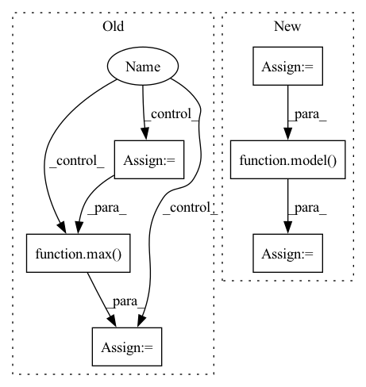

Pattern ID :29238

Before Change
test_sampler = torch.utils.data.distributed.DistributedSampler(test_dataset)
test_loader = torch.utils.data.DataLoader(test_dataset, batch_size=batch_size, num_workers=2, pin_memory=True, sampler=test_sampler)
if args.evaluate:
validate(test_loader, model, criterion, local_rank, args)
return
for epoch in range(args.start_epoch, args.epochs):
train_sampler.set_epoch(epoch)
test_sampler.set_epoch(epoch)
adjust_learning_rate(optimizer, epoch, args)
// train for one epoch
train(train_loader, model, criterion, optimizer, epoch, local_rank, args)
// evaluate on validation set
acc1 = validate(val_loader, model, criterion, local_rank, args)
// remember best acc@1 and save checkpoint
is_best = acc1 > best_acc1
best_acc1 = max(acc1, best_acc1)
if args.local_rank == 0:
save_checkpoint(
{
After Change
for step, (images, labels) in enumerate(train_loader):
// 将对应进程的数据放到对应 GPU 上
images = images.cuda(local_rank, non_blocking=True)
labels = labels.cuda(local_rank, non_blocking=True)
outputs = model(images)
loss = criterion(outputs, labels)
// torch.distributed.barrier()的作用是，阻塞进程，保证每个进程运行完这一行代码之前的所有代码，才能继续执行，这样才计算平均loss和平均acc的时候不会出现因为进程执行速度不一致的错误
torch.distributed.barrier()
In pattern: SUPERPATTERN
Frequency: 3
Non-data size: 6
Instances
Fragment ID: 85974844
Project Name: rentainhe/pytorch-distributed-training
Commit Name: 924a65892510a4cf1352ee408d6186344043f3a4
Time: 2021-01-05
Author: 596106517@qq.com
File Name: distributed.py
M Class Name: AnonimousClass
N Class Name: AnonimousClass
M Method Name: main_worker(3)
N Method Name: main_worker(3)
M Parent Class:
N Parent Class:
M File Name: distributed.py
N File Name: distributed.py
M Start Line: 60
M End Line: 111
N Start Line: 41
N End Line: 110
'>
Before Change
"""
true_labels = []
pred_labels = []
for i, l, p in tqdm(target_data_set, total=len(target_data_set)):
true_labels.append(l)
target_img_tensor = i.unsqueeze(0)
// target_img_tensor = i.unsqueeze(1)
with torch.no_grad():
model.to(device)
target_img_tensor.to(device)
model.eval()
out = model(target_img_tensor)
ps = torch.exp(out)
prediction_percentages = (ps.cpu().numpy()[0]).tolist()
pred = prediction_percentages.index(max(prediction_percentages))
pred_labels.append(pred)
cm = metrics.confusion_matrix(true_labels, pred_labels)
After Change
target_data_loader = torch.utils.data.DataLoader(target_data_set,batch_size=16,shuffle=False)
for i, (imgs, labels, path) in tqdm(enumerate(target_data_loader), total=len(target_data_loader)):
imgs = imgs.to(device)
labels = labels.to(device)
true_labels = true_labels+labels.tolist()
// print (imgs.shape)
with torch.no_grad():
model.eval()
out = model(imgs)
// ps = torch.exp(out)
ps = out
pr = [(i.tolist()).index(max(i.tolist())) for i in ps]
pred_labels = pred_labels+pr
'>
Fragment ID: 85974858
Project Name: radtorch/radtorch
Commit Name: 8122128d39112011e292071d336ed2e52abd8008
Time: 2020-03-01
Author: elbanan@users.noreply.github.com
File Name: radtorch/visutils.py
M Class Name: AnonimousClass
N Class Name: AnonimousClass
M Method Name: show_confusion_matrix(6)
N Method Name: show_confusion_matrix(6)
M Parent Class:
N Parent Class:
M File Name: radtorch/visutils.py
N File Name: radtorch/visutils.py
M Start Line: 312
M End Line: 327
N Start Line: 312
N End Line: 328
'>
Before Change
true_labels = []
pred_labels = []
for i, l, p in tqdm(target_data_set, total=len(target_data_set)):
true_labels.append(l)
// target_img_tensor = i.unsqueeze(1)
target_img_tensor = i.unsqueeze(0)
with torch.no_grad():
model.to(device)
target_img_tensor.to(device)
model.eval()
out = model(target_img_tensor)
// ps = torch.exp(out)
ps = out
prediction_percentages = (ps.cpu().numpy()[0]).tolist()
pred = prediction_percentages.index(max(prediction_percentages))
pred_labels.append(pred)
show_roc(true_labels, pred_labels, auc=auc, figure_size=figure_size)
After Change
target_data_loader = torch.utils.data.DataLoader(target_data_set,batch_size=10,shuffle=False)
for i, (imgs, labels) in enumerate(target_data_loader):
imgs = imgs.to(device)
labels = labels.to(device)
true_labels.append(labels.tolist())
with torch.no_grad():
model.eval()
out = model(imgs)
// ps = torch.exp(out)
ps = out
print(ps.shape)
print (ps)
'>
Fragment ID: 85974839
Project Name: radtorch/radtorch
Commit Name: 74b5ef917af3aebdf033166bf8b81cbc9ceb9b6e
Time: 2020-03-01
Author: elbanan@users.noreply.github.com
File Name: radtorch/visutils.py
M Class Name: AnonimousClass
N Class Name: AnonimousClass
M Method Name: show_nn_roc(5)
N Method Name: show_nn_roc(5)
M Parent Class:
N Parent Class:
M File Name: radtorch/visutils.py
N File Name: radtorch/visutils.py
M Start Line: 199
M End Line: 216
N Start Line: 201
N End Line: 215